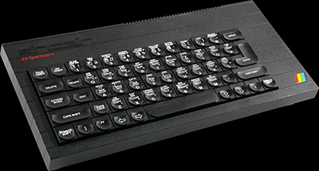

Looking for all the world like a truncated QL, the new Spectrum burst upon an unsuspecting Sinclair User office on Monday 15th October. Well, not quite unsuspecting. There had been rumours for several months that Sinclair was going to put a real keyboard on a Spectrum, but the company has steadfastly denied them. The news was leaked on the Friday before the launch, and finally the tight-lipped men from Sinclair admitted that 'something sexy' was in the post.
Sexy it ain't, although like all Sinclair products there is something good and something less good about it. The Spectrum+, a name which hardly rolls off tongue nor typewriter, is exactly the same old Spectrum 48K with a solid keyboard attached, the whole presented very much in the style of the QL with sharp rather than rounded edges and similar ribbed black plastic.
It is larger than the Spectrum, measuring 320mm x 140mm x 40mm, nearly four inches longer. The keyboard itself is based directly on the QL keyboard, and utilises a rubber mat below the plastic keys rather than the direct contact between key and switching usually associated with professional keyboards. It should, according to Sir Clive Sinclair, be compatible with all available software, and any peripherals which will fit.
The touch is not as good as the very best keyboards already available for the Spectrum, although it is preferable to some of those at the lower range of the market. Because of the rubber mat, there is a certain amount of bounce in the keys, which is a cunning way of obtaining a semi-professional effect without paying professional prices for the parts. However, the weight required is not as even as it should be and the slight difference in give between different keys is mildly irritating for fast typing.
Sinclair has taken the opportunity to include a number of single function keys, which are a considerable advantage. They are DELETE, EDIT, GRAPHICS, INVERSE and TRUE VIDEO, CAPS LOCK, EXTENDED MODE and BREAK. The ENTER and CAPS SHIFT keys are suitably large, and there is a proper SPACE bar, although it is not as long as it would be on a real typewriter keyboard.
Further improvements to keyboard layout include giving a separate key each to " . , and ; and bringing the cursor keys down to a position on both sides of the SPACE bar. The other functions of those keys remain on the top row, as before.
The net effect of the changes is to make it much easier to write programs using graphics and colour control codes, because the several key shifts required on the ordinary Spectrum become easier to follow using single-key entry. The punctuation marks are not such a good idea. It was certainly an improvement to give them their own single-touch keys, but the " and ; are tucked away in the bottom left corner, where nobody who had ever learned to type would think of looking for them.
The keywords and functions are all in white on the keys. Each key has a raised moulding contoured for fingers, and the legends within the moulding give the commands and letters obtained in K, G and L mode. The words outside the moulding are those features obtained in E mode. Unfortunately, Sinclair has abandoned the use of different colours to indicate the different modes.
"The keys are double-injection moulded," says Sir Clive, "which means they can never wear out. The words are not printed but moulded within the keys." Sir Clive says that if he had used that process with three colours, the whole keyboard would have been much more expensive.
That makes the keyboard much more confusing to read and undoubtedly will take away some of the speed advantage gained by using hard plastic keys. Novice programmers in particular will find it more frustrating to learn their way about the keyboard than they do with the help of those colours as a prompt.
But the most extraordinary thing about the keyboard is that it is actually smaller than the original in one important sense. Although the keys are larger than the original rubber pads, those pads were spaced out well, making it easier to hit the correct one and also providing more room for the printed key functions. On the new version the distance between the centre of two keys is fractionally less. The original keyboard was criticised for being small and cluttered, and in that respect the new one is no improvement.
The only other hardware change to the machine is the inclusion of a reset button on the left hand side of the plastic casing. That is a feature which should have been included on the original, and it is a relief to see Sinclair recognising the problems of wear and tear on the power socket at last. There is still no ON-OFF switch, however.
According to Sir Clive, the main target is customers thinking of buying the Commodore 64. "We did some market research last year," he says, "and discovered that although people thought the Spectrum was a superior machine they bought the 64 for the keyboard." Once the QL keyboard was developed, it was decided to produce a version for the Spectrum.
The Spectrum + package also includes a new power pack to style, six commercial programs, the usual cassette and television leads, and a completely new manual and introductory cassette.
The manual has been written by one Neil Ardley and is published by Dorling Kindersley, publishers of the colourful Screen Shot series. It is much shorter than the old manual, having only 80 pages instead of 190.
It is written in four sections with colour-coded margins. The first is Get Going, and provides a coherent guide to plugging the machine in without blowing it, yourself, or the Christmas turkey up. There are diagrams of pink fingers pushing the correct buttons, photographs of what the screen should look like, and a flow chart for discovering the source of the problem. Following that there are some examples of short programs which produce pretty patterns to impress admiring friends and relations.
The second section deals with programming, and is much less comprehensive than the original manual. The section concentrates almost exclusively on graphics, with a short section at the end on sound. Concepts such as LET, FOR . . . NEXT loops and logical operations such as IF . . . THEN structures are mentioned almost in passing as the budding programmer is whisked through to the heady heights of assembling a program in which a spider descends to some pyramids while being shot at by a laser gun. Topics such as animation, attributes and user-defined graphics are explained, but it is not so much a guide to programming as an example of how to put a program together.
The third section is a brief explanation of the mechanics of the machine and the familiar diagrams of CPU, RAM chips and the like all connected by neat lines along which the information flows smoothly and in perfect discipline. It includes a memory map but no details of the system variables.
The final section gives a list of all the Basic commands and an explanation of how each one works. Brief examples are given, but even in combination with Section Two it falls way short of the uninspired but comprehensive guide provided by the original manual.
While the User Guide is a beautifully produced book with plenty of photographs and illustrations, its limitations are confusing. It seems aimed rather more towards a younger, games-orientated market, and does not, lamentably, provide a sufficiently organised course in programming to encourage newcomers to write anything very satisying for themselves.
Dorling Kindersley intends to market the Guide separately for £4.95, which seems a bit steep considering that Spectrum owners will already have a copy of the old manual. If you are still puzzled by the Spectrum graphics instructions, you might be enlightened by the Guide, but there are plenty of other books available in the same price range on the subject which contains much more information besides those simple points covered in both manual and guide.
It is thus unclear as to who would really want the Spectrum + . Those who are only interested in playing games will find the rubber keyboard as easy to use as the plastic one, and a joystick easier than both. Indeed, many of the standard interfaces, including the Kempston joystick and Centronics interfaces, will not fit the new machine, because their ports are obscured by the new casing.
On the other hand, those with serious applications, be they professional or home uses, will probably obtain better value for money buying a 48K rubber key Spectrum and one of the commercially available keyboards. For the £50.00 price difference you can choose from a wide range of keyboards, many of which are much more professional than the Sinclair one. If they can obtain a Spectrum with the Six-pack offer they will get almost the same software as is offered with the Spectrum + as well. Once the Six-Pack offer is discontinued it becomes a much more attractive proposition.
It is therefore worth considering the Spectrum+ not as a £180 computer but as a £50.00 keyboard. Single-key entry commands are not available on any commercial keyboard for the price, but for £10.00 more you could have a Stonechip, which also includes a BEEP amplifier and Load/Save switch. Further up the scale, at about £70.00, the Transform keyboard will give you a more professional feel as well as a numeric keypad and an on/off switch.
On a more comparable price level the Lo >> Profile and Saga keyboards offer well spaced keys with good touch but no single-entry keys. They make up for that deficiency by including several duplicate keys so that one or other of the SHIFT keys is always close at hand.
Sir Clive is convinced that the Spectrum+ will increase his lead over the Commodore 64 in Britain, and make inroads on Commodore domination of the world market. "We feel that there are more serious users about, and that is reflected in the current software available," he says. "It could cut into sales of the QL, but then we are offering people a choice."
First time buyers should consider whether one of the other commercial keyboards would not be more suitable for their use. If you are looking for a word-processor you would probably put ease of typing at a premium and might prefer a keyboard such as the Transform, Saga or Lo > > Profile. But for programmers the Sinclair keyboard offers much greater flexibility of single entry commands which will cut out some of the drudgery of programming, particularly where graphics are concerned.
Certainly no-one in their right mind is going to buy the Spectrum+ if they already own a Spectrum. Sir Clive may have done the decent thing by typists' fingers at long last but there are limits.